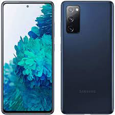

Revenda de celular usado
Apple iPhone 12 (64 GB) - Preto

- Modelo: iPhone 12
- Cor: Preto
- Especificações: O Apple iPhone 12 é um dos smartphones iOS mais avançados e completos que existem em circulação. Tem um grande display de 6.1 polegadas com uma resolução de 2532x1170 pixel. As funcionalidades oferecidas pelo Apple iPhone 12 são muitas e inovadoras. Começando pelo 5G que permite a transferência de dados e excelente navegação na internet. Enfatizamos a excelente memória interna de 256 GB mas sem a possibilidade de expansão.
Câmera discreta de 12 megapixel mas que permite ao Apple iPhone 12 tirar fotos de boa qualidade com uma resolução de 4000x3000 pixel e gravar vídeos em 4K a espantosa resolução de 3840x2160 pixels. A espessura de 7.4mm torna o Apple iPhone 12 um dos telefones mais completos e finos.
- Nota fiscal de compra: 372894637210987
- Estado de conservação: Bom
- Acessórios inclusos: Carregador
- Valor: R$ 2500,00
Samsung Galaxy S20 FE 5G (128GB) - Azul

- Modelo: S20 FE
- Cor: Azul Marinho
- Especificações: O Samsung Galaxy S20 FE 5G é um smartphone Android avançado e abrangente em todos os pontos de vista com algumas características excelentes. Tem uma grande tela de 6.5 polegadas com uma resolução de 2400x1080 pixels. As funcionalidades oferecidas pelo Samsung Galaxy S20 FE 5G são muitas e inovadoras. Começando pelo 5G que permite a transferência de dados e excelente navegação na internet. Enfatizamos a excelente memória interna de 128 GB com a possibilidade de expansão.
Respeitável a câmera de 12 megapixels que permite ao Samsung Galaxy S20 FE 5G tirar fotos com uma resolução de 4000x3000 pixels e gravar vídeos em 4K a espantosa resolução de 3840x2160 pixels. Muito fino, 8.4 milímetros, o que torna o Samsung Galaxy S20 FE 5G realmente interessante.
- Estado de conservação: Ótimo
- Acessórios inclusos: Fone de ouvido
- Valor: R$ 1100,00